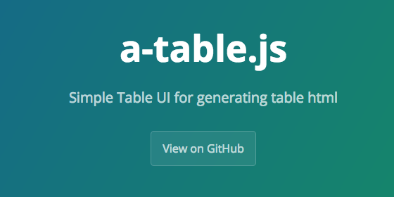

## WordPressのプラグインを
初めて自作してみた話
有限会社アップルップル 堀 悟大
## 自己紹介
### 有限会社アップルップル

### steelydylan
## 業務
- JSライブラリの開発
- a-blog cmsのUIまわりの担当
- 最近はPHPを使ったサーバー周りの処理にも携わる
- Web制作の受託案件
- OSS活動
- 弊社が配布しているJavaScriptオープンソース
- WordPressプラグイン開発環境について
- WordPressプラグイン開発方法
### OSS活動とは
普段だったら社内で完結するソースコードをオープンにして、無償で利用できるようにしましょうという活動
### OSS活動とは
OSSとして提供されているソフトウェア
例）PHP, Ruby, jQuery, Bootstrap, WordPress, Firefox
### OSS活動とは
弊社が販売しているCMS, a-blog cmsのJavaScriptの部分（フロントサイド）のオープンソース化
- WordPressやJimdo、MovableTypeなど他のCMSでも利用可能
- 静的サイトでも利用可能
### GitHub
[https://github.com/appleple](https://github.com/appleple)
### GitHub
### Git Awards
GitHubでのスター数が世界や地域で何位なのかが確認できるサイト
弊社現在 32位
### 弊社が配布しているオープンソース
- SmartPhoto.js
- hiraku.js
- modal-video.js
- a-table.js
### SmartPhoto.js

### SmartPhoto.js
```html
```
### SmartPhoto.js
```js
$(function() {
$(".js-smartPhoto").smartPhoto();
});
```
### SmartPhoto.js
加速度センサーによる動きを無効化する
```js
$(function() {
$(".js-smartPhoto").smartPhoto({
useOrientationApi: false
});
});
```
### SmartPhoto.js
写真の拡大時に画像がプレビューエリアから
はみ出さないようにする
```js
$(function() {
$(".js-smartPhoto").smartPhoto({
resizeStyle: 'fit'
});
});
```
## 他のJSとの違い
- 設置が簡単
- イベントが取得できる
- Orieantation APIに対応
- 画像のグループ化ができる
### SmartPhoto.js
ダウンロードページ
[https://github.com/appleple/SmartPhoto](https://github.com/appleple/SmartPhoto)
### hiraku.js
両サイドからの開閉
### hiraku.js
```html
### hiraku.js
```js
$(".js-offcanvas").hiraku({
btn: ".js-offcanvas-btn",
fixedHeader: ".js-fixed-header",
direction: "left",
breakpoint: 767
});
```
## 他のJSとの違い
- メニュー部分のHTMLをどこに配置してもいい。
- 美しいアニメーション
- アクセシビリティに対応
- ヘッダが固定できる。
### hiraku.js
ダウンロードページ
[https://github.com/appleple/hiraku](https://github.com/appleple/hiraku)
### modal-video.js
### modal-video.js
YoutubeやVimeoなどの動画をモーダルウィンドウで再生するためのJS
### modal-video.js
```html
```
### modal-video.js
```html
```
```js
$(".js-modal-btn").modalVideo();
```
### modal-video.js
[https://github.com/appleple/modal-video](https://github.com/appleple/modal-video)
### a-table.js

### a-table.js
テーブルを編集用のUIに変身させるJS。テーブルのセルなどの情報を取得できる。
### a-table.js
Google SpreadSheetからの貼り付けが可能
### a-table.js
```html
```
### a-table.js
```js
var table = new aTable('.table',{
lang:'ja'
});
table.afterEntered = function() {
console.log(this.getTable());
}
table.afterRendered = function() {
console.log(this.getTable());
}
```
### a-table.js
[https://codepen.io/appleple/pen/RpZqLZ](https://codepen.io/appleple/pen/RpZqLZ)
### a-table.js
ダウンロードページ
[https://github.com/appleple/a-table.js](https://github.com/appleple/a-table.js)
## WordPressプラグイン開発環境について
### Dockerの利用
dockerをおもな開発環境にしています。
... 説明をもう少し
### Githubの利用
https://github.com/appleple/wp-smartphoto
## WordPressプラグイン開発方法
## 味噌はadd_actionとadd_filter
## プラグイン作成の工程
- 管理画面の作成
- フロント側の実装
## 管理画面の作成
- admin.php
## add_action
WordPressでは、特定のイベント時にそのイベントをhookしてそこに処理を挟み込むことができます。
その時に使うのがadd_actionです。
## add_filter
WordPressでは、できあがったHTMLを正規表現などで書き換えてあらたなHTMLを生成するための関数が用意されています。
add_filterです。
# Thank You!
Twitter: @steelydylan
GitHub: steelydylan